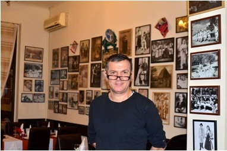
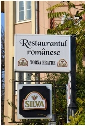
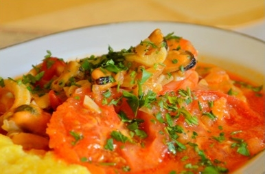
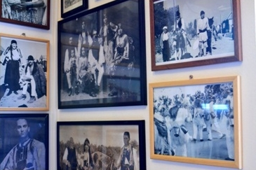
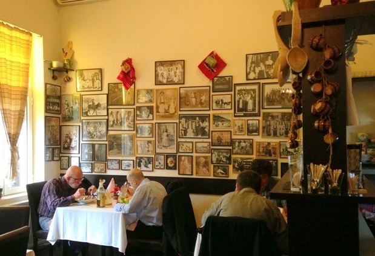

Într-o zi însorită de noiembrie ne-am pornit prin București într-o aventură culinară unică, una care avea să ne poarte până departe, până pe malurile însorite ale mării Adriatice, pe tărâmuri istro-române.
Restaurantul "Torna Frate" este o Mecca a tot ceea ce înseamnă mâncăruri românești -- adunate de pe oriunde se află români. Pentru noi, relevant este faptul că "Torna Frate" este singurul restaurant din România, și poate chiar din lume, care servește mâncăruri istro-române.
 Pe proprietar l-am găsit în curte ocupat cu tot ceea ce înseamnă managementul unui restaurant de succes. Era omniprezent, curățând curtea în așteptarea mușteriilor, îngrijindu-se de micile probleme care apar în orice fel de restaurant, dar făcându-și timp să primească cum se cuvine și să ureze poftă bună clienților.
Ne-am așezat la o masă, într-un colț al resturantului, înconjurați de poze vechi care ne amintesc de alte vremuri și de alte meleaguri, de România și Româniile strămoșilor noștri. Am venit aici pentru al cunoaște pe dl. Aurel Pascu, proprietarul și inițiatorul acestui frumos proiect și pentru a afla ce anume l-a determinat să deschidă un astfel de local.
L-am rugat așadar pe dl. Pascu să ne spună cum s-a născut ideea restaurantului "Torna Frate."
Am avut până acuma restaurante italienești, restaurante cu profil fast-food, și altele cu un alt profil decât unul specific românesc. Am simțit la un moment dat că am acumulat o experință suficient de mare ca să deschid și un restaurant românesc, mai altfel decât celelalte. Am vrut să fac ceva, mai ales că mă plimbasem destul de mult prin țară și cunoscusem diverse metode și tehnologi culinare altele decât cele pe care noi le considerăm tradiționale dar le mâncăm doar local (adică dacă ești din Iași mâncare din zona Iașului de exemplu), fără să știm ce mai este și dincolo de munți sau dincolo de Dunăre. Sunt comunități de români și la sud de Dunăre, au și acele comunități un specific altfel decât al nostru, unul destul de diferit. Ideea este că am vrut să cuprind în acest restaurant tot românismul balcanic, absolut tot. Nu am reușit să o fac pentru ca sunt comunități de români și în Cehia, și în Ungaria, și în Ucraina, nemaivorbind de Moldova și nordul Bucovinei, și în Ucraina, de zonele mai îndepărtate. N-am putut să ajung până acolo și nici nu cred că sunt informații decât dacă te duci la fața locului să bați jumătate de Europă ca să găsești aceste mici insule de românism.
 Numele de "Torna Frater" l-am ales pentru că această expresie, fiind practic începutul limbii române, mi se părea cea mai reprezentativă pentru un restaurant care să cuprindă tot românismul. De acolo a pornit limba română, de la "torna frater," cum spunea cronicarul.
O bază din meniu o aveam și după aceea am început să mai caut câteva preparate. Din zonele tradiționale românești, Moldova, Muntenia, Transilvania și Dobrogea cunoșteam deja preparatele și chiar le stăpâneam. Din Basarabia am mai luat vreo două. După aceea m-am întors către cele din sudul Dunării ca să completez meniul. De la aromâni știam câteva și eram încântat să le fac. De la megleno-români însă nu știam absolut nimic. Am fost două săptămâni în satul Cerna în județul Tulcea și am stat acolo la o familie de megleno-români la o doamnă Papahagi, o octogenară. Mă rog, nu am stat la ea, dar mergeam zilnic la ea și îmi notam diverse lucruri, de la limbă și obiceiuri până la mâncare. Mâncarea mă interesa cel mai mult. Am reușit să prind vreo cinci - șase feluri de mâncare importante, care după părerea mea, îi reprezentau. Din păcate nu toate pot fi adaptate la munca de restaurant. Poți să le faci acasă. Unele sunt foarte laborioase și durează, începi dimineața să faci preparatul și îl termini a doua zi dimineață pentru că îl pui la dospit, îl pui la fiert, îl pui la maturat; sunt diferite procedee pe care nu poți să le urmărești și să le faci în restaurant. Câteva au căzut cu toate că erau foarte interesante, nu am avut cum să le adaptez.
Cum ați ajuns să aveți pe meniu și preparate istro-române?
 Cu preparatele istro-române a fost cam tot așa dar nu am avut posibilitatea, deși aș fi vrut, să merg până în Croația să văd la fața locului. Am găsit însă pe net o scrisoare în care un istro-român îi spunea altuia că a mâncat acasă un brodet de pește. M-am gândit că trebuie să fie ceva acest broted; îmi suna a ciorbă, a supă, a zeamă. Am căutat și nu am găsit nimic la brodet de pește. Am căutat în engleză ‘fish brodet’ și asta m-a dus pe o grămadă de situri croate pe care le-am tradus și am descoperit că este de fapt un preparat din tot vestul Croației, de la zona litorală. Putea foarte bine să fie croat, putea să nu fie istro-român dar eu l-am pus pentru că, așa cum v-am spus, a fost acel episod în care un istro-român îi spunea altuia că a mâncat un brodet de pește.
După aceea am mai găsit un preparat tot la ei, era vorba de un pește cu lămâie și cartofi la cuptor dar care nu avea un nume. Eu i-am pus numele ‘Dorada Șușnievița’ după un pește care se găsește în Marea Adriatică și, m-am gândit, după numele satului cel mai reprezentativ. Nu este un preparat de mâncare original 100%, este însă un preparat din peninsula Istria. Eu i-am pus acest nume pentru ca să fie relevant.
Cât de bine sunt primite preparatele istro-române?
Foarte, foarte bine. Lumea este interesată, mai ales personale care vin în week-end la masă, familiști, se uită pe meniu cu curiozitate. Când ajung la ‘strachina cu tradiții’, așa cum avem noi trecut în meniu, avem ceva pentru fiecare: un preparat de la ardeleni, unul de la bănățeni, un altul de la munteni, de la moldoveni, aromâni, etc. Sunt încântați să vadă, sunt chiar foarte interesați și le place multora ideea unor preparate istro-române.
Care sunt mâncărurile cele mai populare care le serviți?
Dorada Șușnievița este unul dintre preparatele care se vinde cel mai bine. Brodetul de pește la fel. Aceste preparate se vând foarte, foarte bine și sunt foarte cerute și solicitate. Mai avem cavarmaua de rață de la megleno-români, daca vă interesează și acest aspect. Este o pulpă de rață frăgezită în untură, fiartă în untură câteva ore, după aceea se rumenește pe plită și se servește cu mămăligă și mujdei. Mai sunt și alte preparate care se vând foarte bine cum ar fi colțunași cu mânătărci de la basarabeni, pitligeani țârgăsiti (n.r. vinete prăjite) de la aromâni, phiperchi, chiroștii, etc.
Revenit la preparatele istro-române, au fost persoane care au venit la restaurantul dumneavoastră special pentru că au văzut aceste feluri de mâncare pe meniu?
 Am avut într-o vară pe cineva de la un ziar care mi-a adus o domnișoară istro-română care vorbea perfect românește. Cred că făcuse școala în Romania, la București, sau facultatea și de aceea vorbea română. Mi-a prezentat-o ca fiind istro-română. Din păcate nu am avut timpul necesar -- curiozitate am avut -- dar nu am avut timpul necesar, iar relația a fost așa destul de distantă încât să nu intru în amănunte, să pun întrebări… Chiar eram interesat să aflu câteva lucruri dar…
Mi-am propus pentru ca atunci când voi avea timp să ajung în Croația; să mă confrunt la fața locului cu aceste chestii. Pentru că este imposibil să nu găsesc, probabil și cu ajutorul dumneavoastră, să mă interesez pentru că este bine să valorific aceste lucruri, să rămână în continuare.
Mai știți vre-un alt restaurant care să servească mâncăruri istro-române?
Nu. Nu am mai auzit de nici unul.
Faptul că un restaurant din România servește și bucate istro-române este așadar meritul dumneavoastră, este ceva unicat. Acesta este de altfel și motivul pentru care am vrut să vă întâlnim pentru a aduce la cunoștința unui public interesat de acest subiect, și cât mai larg, această realizare unică.
Din cele doua mâncăruri istro-române pe care mi-o recomandați?
 Eu aș zice să încercați acest brodet de pește. Este minunat. Nu este foarte sofisticat dar este foarte gustos, conține un filet de pește alb, creveți, calamari și scoici și se servește cu mămăliguță.
În încheiere, vreți să spuneți ceva și celor care se uită pe pagina noastră, să îi încurajați să vină la dumneavoastră?
Da, desigur. Îi așteptăm la noi cu mare plăcere - dacă drumul nu este o piedică. Pentru cei care vin de departe, pot atunci când vizitează Bucureștiul să treacă și pe la noi. Ne găsesc și pe Facebook la https://www.facebook.com/Restaurantul-Romanesc-Torna-Fratre-221250767941266/ și pe situl nostru la www.restaurant-tornafratre.ro.
Vă mulțumesc foarte mult pentru vizită și vă mai așteptăm oricând cu drag.
Bogdan Banu
Janury 19, 2015
© 2015 Gândacul de Colorado